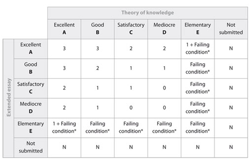

Theory of Knowledge
About Theory of Knowledge
Introduction
The IB Theory of Knowledge class is an interdisciplinary requirement intended to stimulate critical reflection on knowledge and experience gained inside and outside the classroom. The course challenges students to question the basis of knowledge, to be aware of subjective and ideological biases and to develop the ability to analyze evidence. TOK is a key element in encouraging students to appreciate other cultural perspectives. It links different lines of enquiry and explores similarities and differences in different types of knowledge found in different disciplines.
The course is unique in IB, which recommends at least 100 hours of teaching time spanning the program's two years. At HWHS, we complete the course in two separate semesters. Diploma candidates are encouraged to reflect on all aspects of their work throughout their course of study. They examine the grounds for moral, political, and aesthetic judgments that individuals must make in their daily lives.
IB International refers to TOK as its most “unusual” or “curious” course.
TOK is a “CORE” subject. IB’s view is that the course DISTILLS the positive outcomes of the entire course of study in the Diploma Programme.
Why?
Authority: TOK is a course that asks us to acquire an understanding of the ways we interpret and incorporate knowledge. Thus, it is a course of questions rather than exact answers. This can be new terrain for high achieving students who often like information to be laid out in a linear fashion.
Teacher as guide: Students are accustomed to teachers who act as an authority figure disseminating required information and assessing it directly. This is not the case in TOK, where the instructor guides the class toward becoming open minded and independent thinkers.
Constructivism: TOK is partially based upon the awareness that students take in new ideas, test them, and accept or reject them based upon prior experiences in real life. In a sense, TOK asks us to learn about our own “filters” of experience. The core issues of TOK require the “knower” to ask questions such as:
- What counts as knowledge?
- How does it grow?
- What are its limits?
- Who owns knowledge?
- What is the value of knowledge?
- What are the implications of having, or not having, knowledge?
Four further important concepts of the TOK course
- Knowledge claims - A knowledge claim is an assertion that “something is the case” as a factual claim in science or history, an ethical assertion, or a religious truth.
- Assumptions – Our current knowledge and the way we accept and interpret new knowledge is based upon a broad range of previously accepted ideas. For example, our provincial Global History 12 course necessarily relates the actions of recent past as a consequence of the prominence of “the West”. Hence, “freedom” has certain emotional and social interpretations in this view. Consider this quotation from the Roman historian Livy:
“...the cult of the individual’s tastes and caprices to indifference to all else was being interpreted as freedom, the laws and the unwritten codes were becoming of less use...”
What does this quotation imply about the “assumption” of freedom? The clarity of arguments in all areas of knowledge benefits from an awareness of the assumptions we make.
- Justification- Justification refers to the grounds upon which we accept knowledge. What makes knowledge valid?
- Reasoning? What is the value of hypothesis? In other words, how do we affirm the truth of a knowledge claim?
- Evidence? What fallibilities exist in memory?
- Expert Testimony? Do ideological or commercial interests have a bearing on the evidence of experts?
- Who owns knowledge?
- What is the value of knowledge?
- What are the implications of having, or not having, knowledge?
- Faith? Is faith justification enough? Do all knowledge claims need justification?
- Implications- If students accept a particular claim held together by a unifying perspective—then what further claims are they likely to accept, and how are they likely to act on their basis?
A good example takes place in the study in HL English of Antigone by Sophocles.
Students want the female figure (Antigone) to be the central figure because of the interpretation of the role of women in OUR society.
However, according to Aristotle’s definition of tragedy upon which so much of our storytelling is based, Antigone cannot be the tragic figure.
Where does this fit in with rest of the IB?

In conjunction with the Extended Essay, TOK can provide the students with up to three bonus points that count towards their final diploma total in accordance with the following matrix.

For example a student being awarded an A grade in both TOK and the Extended Essay will score three bonus points, as will a student who is awarded an A grade in one and a B grade in the other. In contrast, however, a student who is awarded a B grade for both elements will receive two bonus points while a student who is awarded C grades for both elements will only receive one. Bonus points often help students achieve the required number of points to enter their university of their choice.
(F*) If a student attains an E grade in either their Extended Essay or TOK they will have to score at least 28 points in order to qualify for the diploma. Attainment of an E grade in both TOK and the Extended Essay represents an automatic failing condition.
What are the requirements?
- Both certificate and diploma students are required to study TOK for a total of 100 hours
- TOK is taught every other day
- Students are required to complete one practice essay and presentation.
Evaluation and Assessment
External assessment ( 67%)
Essay on a prescribed title (1,200–1,600 words)
This component consists of an essay on a title chosen
from a list of titles prescribed by the IBO for each examination session.
Internal assessment ( 33%)
The presentation (approximately 10 minutes per student)
This component consists of a presentation to the class and a written presentation planning document which includes:
- the knowledge issue that is the focus of the presentation
- a summary in note form of the knowledge issues to be treated during the presentation
- achievement levels for each of the four assessment criteria, briefly justified, from both student and teacher.
The presentation should be an integral part of the TOK course.
Please note, your predicted TOK grade will be based on a practice essay and presentation in grade 12, smaller writing assignments most of which will be informal responses to articles and discussions in class, and contribution to class discussions.
Having followed the TOK course, students should be able to:
- critically analyze knowledge claims, their underlying assumptions and their implications;
- construct reasoned, logical, well balanced arguments in defence of their point of view;
- demonstrate an understanding of different perspectives;
- draw links and make effective comparisons between different perspectives;
- demonstrate an ability to give a personal, self-aware response to a knowledge issue;
- formulate and communicate ideas clearly with due regard for accuracy and academic honesty;
- be comfortable sharing ideas with others and learning from what others think.
Halifax West High School
IB Theory of Knowledge (TOK)
G. MacDuff
gmacduff@hrsb.ca